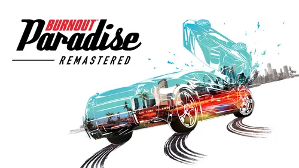

História
O enredo é bem simples, você é um novato em Paradise City e deve subir aos ranques e melhorar sua carteira. Proposta direta para jogar você na ação de imediato.
Descubra curiosidades sobre seus jogos favoritos!
Ah... corridas em altas velocidades e destruição em massa, quem não gostaria de deixar sua competição para trás e em pedaços nessa introdução a franquia ao mundo aberto?

O enredo é bem simples, você é um novato em Paradise City e deve subir aos ranques e melhorar sua carteira. Proposta direta para jogar você na ação de imediato.
Personagens? A única coisa com vida são os carros, tanto você quanto os adversários. Não sinta pena de amassá-los (ou ser amassado), se divirta!
Como que os carros se destroem tão perfeitamente? Simples, um veículo muda instantaneamente para um "modelo de acidente" pré-determinado, onde o carro recebe texturas de dano e onde que o carro pode ser amassado. Então é bem simples mas altamente efetivo!
PS3/PS4, Xbox 360/Xbox One, Windows, Nintendo Switch. Data original de lançamento é janeiro de 2008 e o remaster em março de 2018.